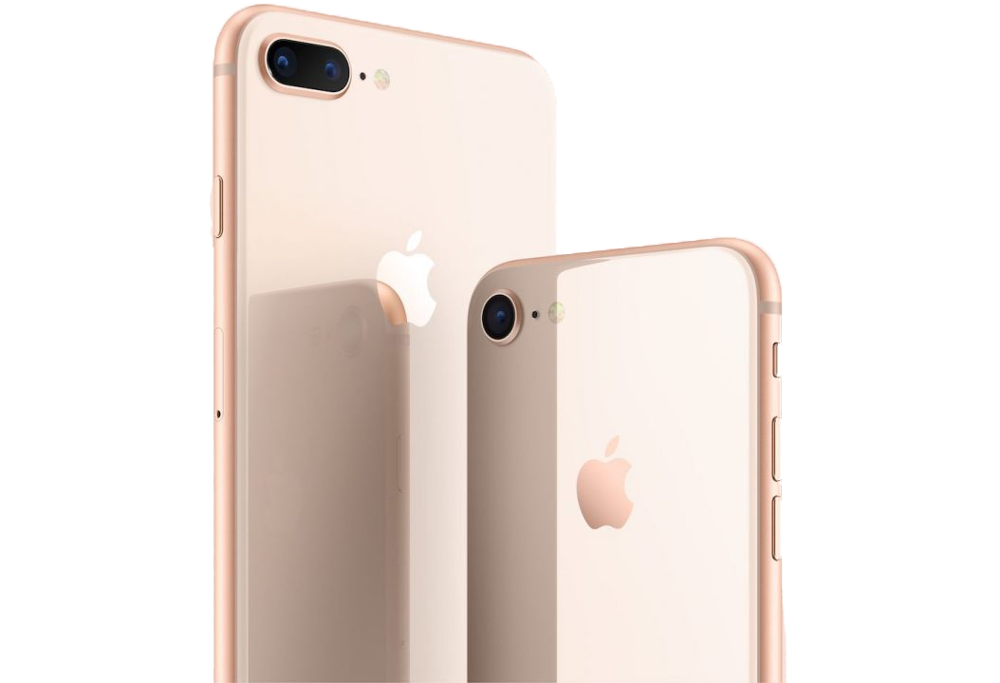
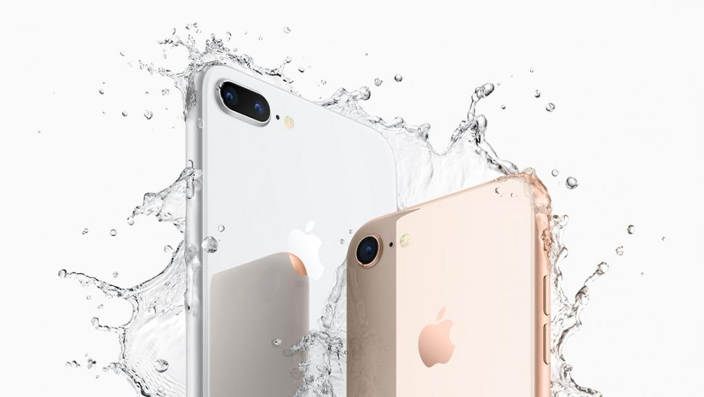
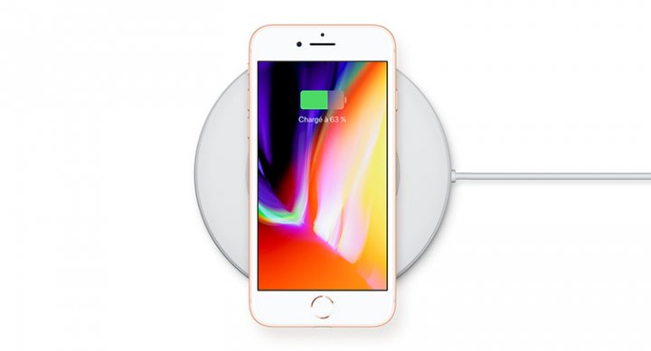

Présentation
Un nouveau design tout de verre vêtu. L’appareil photo le plus populaire au monde, encore amélioré. La plus puissante et la plus intelligente des puces de smartphone. Le chargement sans fil et sans effort. Et des expériences de réalité augmentée inimaginables auparavant. Voici l’iPhone 8. Une nouvelle génération d’iPhone.Un nouveau design tout de verre vêtu. L’appareil photo le plus populaire au monde, encore amélioré. La plus puissante et la plus intelligente des puces de smartphone. Le chargement sans fil et sans effort. Et des expériences de réalité augmentée inimaginables auparavant. Voici l’iPhone 8. Une nouvelle génération d’iPhone.Un nouveau design tout de verre vêtu. L’appareil photo le plus populaire au monde, encore amélioré. La plus puissante et la plus intelligente des puces de smartphone. Le chargement sans fil et sans effort. Et des expériences de réalité augmentée inimaginables auparavant. Voici l’iPhone 8. Une nouvelle génération d’iPhone.Un nouveau design tout de verre vêtu. L’appareil photo le plus populaire au monde, encore amélioré. La plus puissante et la plus intelligente des puces de smartphone. Le chargement sans fil et sans effort. Et des expériences de réalité augmentée inimaginables auparavant. Voici l’iPhone 8. Une nouvelle génération d’iPhone.
Le verre le plus résistant jamais vu sur un smartphone, à l’avant comme à l’arrière. Un contour en aluminium de qualité aérospatiale de couleur assortie. Trois nouvelles finitions gris sidéral, argent et or.
Une conception d’une précision extrême pour résister à l’eau et à la poussière.
L’arrière en verre est conçu pour le chargement sans fil.